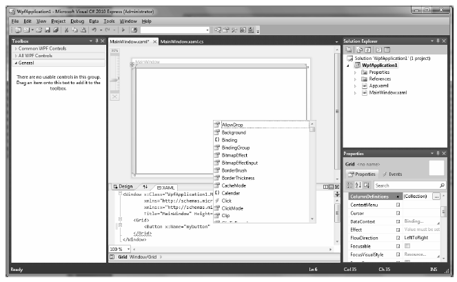

During the summer of 2004, Microsoft introduced a new line of IDEs that fall under the designation of Express products (http://msdn.microsoft.com/express). To date, there are various members of the Express family (all of which are completely free and supported and maintained by Microsoft Corporation), including the following:
By and large, the Express products are slimmed-down versions of their Visual Studio 2010 counterparts and are primarily targeted at .NET hobbyists and students. Like SharpDevelop, Visual C# 2010 Express provides various object browsing tools, a Windows Forms designer, the Add References dialog box, IntelliSense capabilities, and code expansion templates.
However, Visual C# 2010 Express offers a few (important) features currently not available in SharpDevelop, including the following:
Consider Figure 2-8, which illustrates using Visual C# Express to author the XAML markup for a WPF project.
Figure 2-8. Visual C# 2010 Express has integrated support for .NET 4.0 APIs
Because the look and feel of Visual C# 2010 Express is so similar to that of Visual Studio 2010 (and, to some degree, SharpDevelop), I do not provide a walk-through of this particular IDE here. You are free to use this IDE as you work through the book, but do be aware that Visual C# 2010 Express does not support project templates form building ASP.NET web sites. If you wish to also build web applications, be sure to download Visual Web Developer 2010, also available from http://msdn.microsoft.com/express.